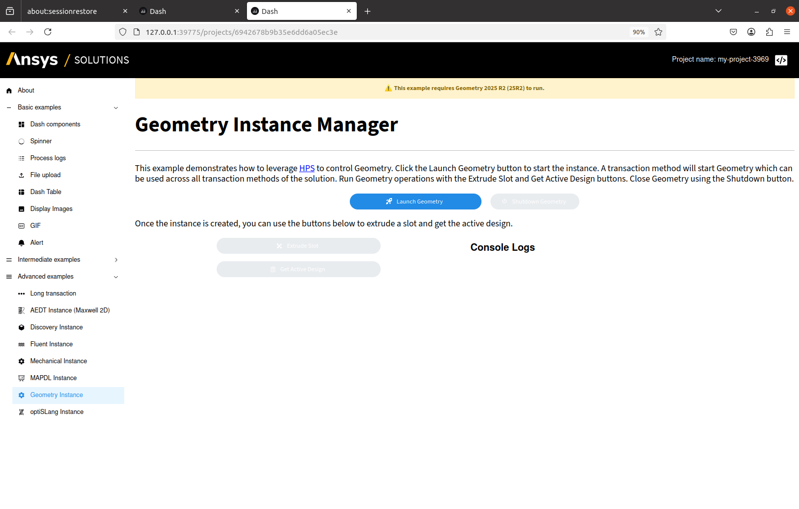
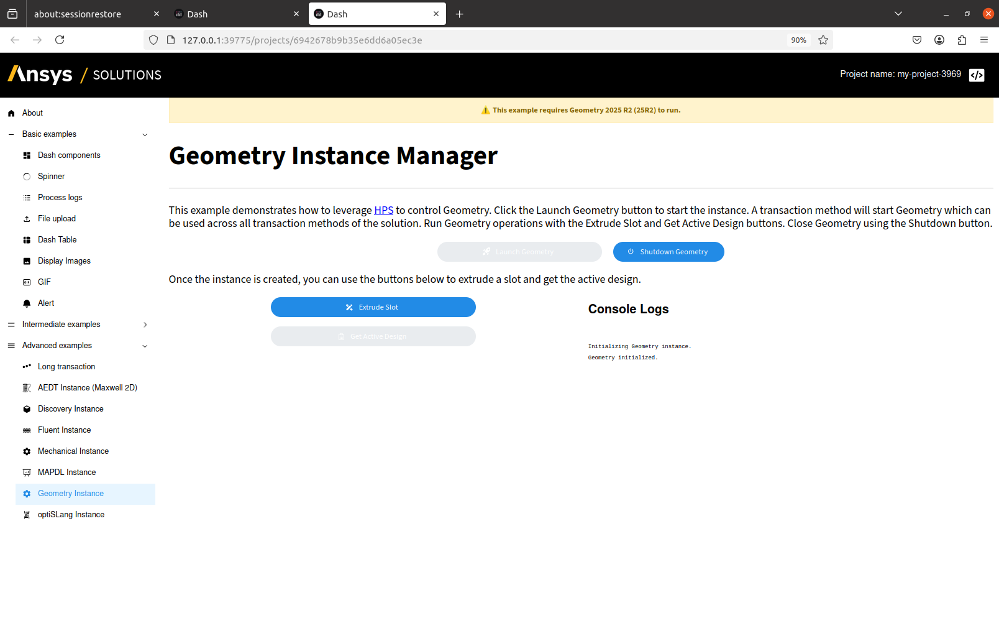
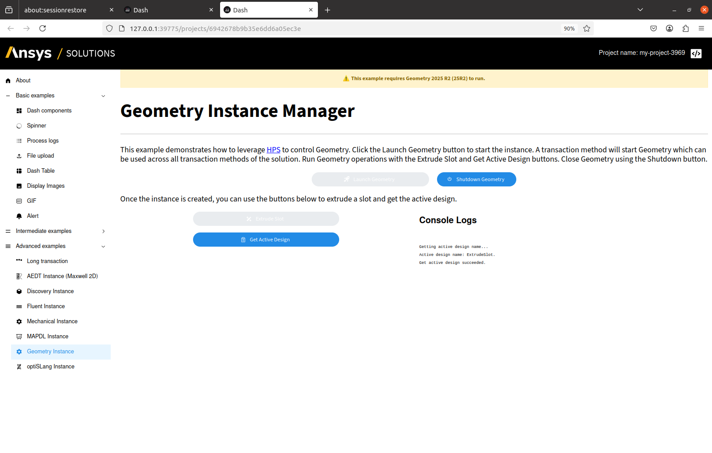
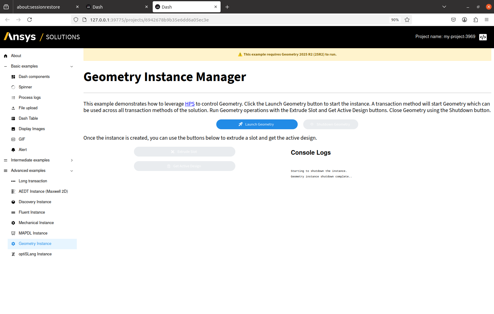

Geometry Product Instance Manager#
Objective#
PyGeometry is a versatile library for geometric modeling and spatial computation, supporting a wide range of applications including shape representation, transformation operations, and spatial analysis across simulations involving multiple physical phenomena.
This example demonstrates how to create a product instance manager for Geometry products using SAF. The product instance manager enables management of the Geometry product instance lifecycle, including starting, stopping, and accessing the product’s API.
Component |
Description |
|---|---|
Step model |
|
User interface |
|
{kind=link}

Status before the initialization of the product instance#
{kind=link}

Status after the initialization of the product instance#
{kind=link}

Status after calling the extrude_slot and get_active_design methods of the product instance#
{kind=link}

Status after shutting down the product instance#
Prerequisites#
Note
This example requires the Geometry 2025 R2 Service Pack 4 (25R2 SP4) product to be installed on your machine.
To work with a Geometry product instance, be sure to install the geometry extra from the ansys-saf-product-manager package. You can do this by manually editing your pyproject.toml.
ansys-saf-glow-engine = {version = "^2.30", extras = ["pim"]}
ansys-saf-product-manager = {version = "^0.5", extras = ["geometry"]}
This will install the supported version of ansys-geometry-core to control the Geometry product instances.
This example uses PIM as the product instance management system. If you want to use HPS instead, replace the pim extra with hps.
For more information, see Configuration.
Solution#
To create a product instance manager for Geometry products and interact with it, walk through the following sequence of tabs.
Define the step model.
Define the step model
There are two transactions that are used to manage the product instance lifecycle:
launch_geometryandclose_geometry.The first one initializes the product instance, while the second one shuts it down.
The
launch_geometrylong-running transaction is decorated with@create_instanceto create an instance of the Geometry product manager, in this case,GeometryManager.The
close_geometrytransaction is decorated with@instanceand is used to shut down the existing Geometry instance.
The other two transactions,
extrude_slotandget_active_design, are used to call the Geometry API to extrude a slot and get the active design, respectively.Both are decorated with
@instanceto indicate they operate on an existing product instance.
geometry_step.py# 5from ansys.geometry.core.math import Point2D # pyright: ignore[reportMissingTypeStubs]
6from ansys.geometry.core.misc import UNITS, Distance # pyright: ignore[reportMissingTypeStubs]
7from ansys.geometry.core.sketch import Sketch # pyright: ignore[reportMissingTypeStubs]
8from ansys.saf.glow.solution import StepModel, StepSpec, create_instance, instance, long_running, transaction
9from ansys.saf.glow.solution.beta.geometry import GeometryManager
10from pint import Quantity
11
12
13class GeometryInstanceStep(StepModel):
14 """Geometry step for the advanced solution example."""
15
16 version: str = "252"
17 body_faces: int = 0
18 body_edges: int = 0
19 active_design_name: str = ""
20 geometry_available: bool = False
21
22 @transaction(self=StepSpec(download=["version"]))
23 @create_instance("geometry_manager", GeometryManager)
24 @long_running
25 def launch_geometry(self, geometry_manager: GeometryManager) -> None:
26 """Launch the Geometry instance and check its availability."""
27 self.transaction.raise_event(message="Clear Messages", stream_name="geometry-output-stream")
28 self.transaction.raise_event(message="Initializing Geometry instance.", stream_name="geometry-output-stream")
29 try:
30 geometry_manager.initialize(version=self.version)
31 except Exception as e:
32 self.transaction.raise_event(
33 message="Geometry initialization failed", stream_name="geometry-instance-stream"
34 )
35 self.transaction.raise_event(
36 message=f"Geometry initialization failed: {e}", stream_name="geometry-output-stream"
37 )
38 return
39 self.transaction.raise_event(message="Geometry initialized.", stream_name="geometry-instance-stream")
40 self.transaction.raise_event(message="Geometry initialized.", stream_name="geometry-output-stream")
41
42 @transaction(self=StepSpec(upload=["body_faces", "body_edges"]))
43 @instance("geometry_manager")
44 def extrude_slot(self, geometry_manager: GeometryManager) -> None:
45 """Create a slot in the Geometry instance by extruding a sketch."""
46 self.transaction.raise_event(message="Clear Messages", stream_name="geometry-output-stream")
47 self.transaction.raise_event(message="Starting extrude slot transaction.", stream_name="geometry-output-stream")
48 try:
49 # Create design on Geometry instance
50 design = geometry_manager.instance.create_design("ExtrudeSlot")
51 # Create a Sketch object and draw a slot
52 sketch = Sketch()
53 sketch.slot(Point2D([10, 10], UNITS.mm), Quantity(10, UNITS.mm), Quantity(5, UNITS.mm)) # type: ignore
54 # Extrude the sketch
55 body = design.extrude_sketch(name="MySlot", sketch=sketch, distance=Distance(50, UNITS.mm)) # type: ignore
56 if not body:
57 raise RuntimeError("Body was not created.")
58 self.body_faces = len(body.faces)
59 self.body_edges = len(body.edges)
60 except Exception as e:
61 self.transaction.raise_event(message="Extrude Slot failed.", stream_name="geometry-instance-stream")
62 self.transaction.raise_event(message=f"Extrude Slot failed: {e}", stream_name="geometry-output-stream")
63 return
64 self.transaction.raise_event(message="Extrude Slot succeeded.", stream_name="geometry-instance-stream")
65 self.transaction.raise_event(message="Extrude Slot succeeded.", stream_name="geometry-output-stream")
66
67 @transaction(self=StepSpec(upload=["active_design_name"]))
68 @instance("geometry_manager")
69 def get_active_design(self, geometry_manager: GeometryManager) -> None:
70 """Get the name of the currently active design."""
71 self.transaction.raise_event(message="Clear Messages", stream_name="geometry-output-stream")
72 self.transaction.raise_event(message="Getting active design name...", stream_name="geometry-output-stream")
73 try:
74 self.active_design_name = geometry_manager.instance.read_existing_design().name
75
76 self.transaction.raise_event(
77 message=f"Active design name: {self.active_design_name}.", stream_name="geometry-output-stream"
78 )
79 except Exception as e:
80 self.transaction.raise_event(message="Get active design failed.", stream_name="geometry-instance-stream")
81 self.transaction.raise_event(message=f"Get active design failed: {e}", stream_name="geometry-output-stream")
82 return
83 self.transaction.raise_event(message="Get active design succeeded.", stream_name="geometry-instance-stream")
84 self.transaction.raise_event(message="Get active design succeeded.", stream_name="geometry-output-stream")
85
86 @transaction(self=StepSpec(upload=["geometry_available"]))
87 @instance("geometry_manager")
88 def close_geometry(self, geometry_manager: GeometryManager) -> None:
89 """Close the Geometry instance."""
90 self.transaction.raise_event(message="Clear Messages", stream_name="geometry-output-stream")
91 self.transaction.raise_event(message="Starting to shutdown the instance.", stream_name="geometry-output-stream")
92 try:
93 geometry_manager.shutdown()
94 self.geometry_available = False
95 except Exception as e:
96 self.transaction.raise_event(message="Geometry shutdown failed", stream_name="geometry-instance-stream")
97 self.transaction.raise_event(message=f"Geometry shutdown failed: {e}", stream_name="geometry-output-stream")
98 return
99 self.transaction.raise_event(message="Geometry shutdown.", stream_name="geometry-instance-stream")
100 self.transaction.raise_event(
101 message="Geometry instance shutdown complete..", stream_name="geometry-output-stream"
102 )
Define the user interface.
Define the step layout
The user interface has four main buttons. Each one triggers a transaction in the step model.
geometry_instance_page.py# 4from typing import List, Tuple
5from ansys.saf.glow.client import DashClient, callback
6import ansys_web_components_dash as AwcDash
7from ansys_web_components_dash import AwcDashEnum
8from dash_extensions.enrich import Input, Output, State, dcc, html, no_update # pyright: ignore[reportMissingTypeStubs]
9from dash_iconify import DashIconify
10import dash_mantine_components as dmc
11from ansys.solutions.examples.solution.definition import ExamplesSolution, GeometryInstanceStep
12
13
14def layout(step: GeometryInstanceStep) -> html.Div:
15 """Layout for the Geometry Instance Manager page."""
16 logs_container = AwcDash.Card(
17 [
18 html.Div(
19 dmc.Title(f"Console Logs", order=3),
20 ),
21 dmc.Space(h=20),
22 html.Div(
23 html.Pre(
24 id="console-logs",
25 style={"whiteSpace": "pre-wrap", "wordBreak": "break-all", "fontSize": "10px"},
26 ),
27 style={
28 "height": "600px",
29 "width": "100%",
30 },
31 ),
32 ],
33 elevation=AwcDashEnum.ElevationSize.SMALL.value,
34 borderRadius=AwcDashEnum.BorderRadius.SMALL.value,
35 awcSizingWidth="100%",
36 padding=AwcDashEnum.Size._2x.value,
37 )
38 layout = html.Div(
39 [
40 html.Div(
41 "⚠️ This example requires Geometry 2025 R2 Service Pack 4 (25R2 SP4) to run.",
42 style={
43 "backgroundColor": "#fff3cd",
44 "color": "#856404",
45 "padding": "12px",
46 "border": "1px solid #ffeeba",
47 "textAlign": "center",
48 "fontWeight": "bold",
49 "marginBottom": "10px",
50 },
51 ),
52 html.Br(),
53 html.H1(
54 "Geometry Instance Manager", className="display-3", style={"font-size": "48px", "fontWeight": "bold"}
55 ),
56 html.Br(),
57 html.Hr(className="my-2"),
58 html.Br(),
59 html.P(
60 [
61 "This example demonstrates how to leverage ",
62 html.A(
63 "HPS",
64 href="https://saf.glow.docs.solutions.ansys.com/version/stable/user_guide/"
65 "using_ansys_products/product_instance_management/configuration.html#hpc-platform-services-hps",
66 target="_blank",
67 style={"color": "blue"},
68 ),
69 " to control Geometry. Click the Launch Geometry button to start the instance. A "
70 "transaction method will start Geometry which can be used across all transaction "
71 "methods of the solution. Run Geometry operations with the Extrude Slot and "
72 "Get Active Design buttons. Close Geometry using the Shutdown button.",
73 ],
74 style={"font-size": "20px"},
75 ),
76 html.Div(
77 [
78 dmc.Button(
79 "Launch Geometry",
80 id="launch_geometry_button",
81 variant="filled",
82 radius="xl",
83 style={"color": "#FFFFFF", "width": "20%"},
84 leftIcon=DashIconify(icon="streamline:startup-solid"),
85 ),
86 dmc.Button(
87 "Shutdown Geometry",
88 id="shutdown_geometry_button",
89 variant="filled",
90 radius="xl",
91 style={"color": "#FFFFFF", "width": "200px", "marginLeft": "20px"},
92 leftIcon=DashIconify(icon="mdi:shutdown"),
93 disabled=True,
94 ),
95 ],
96 style={
97 "display": "flex",
98 "justifyContent": "center",
99 "alignItems": "center",
100 "marginTop": "20px",
101 },
102 ),
103 html.Br(),
104 html.P(
105 "Once the instance is created, you can use the buttons below to extrude a slot and get the active"
106 " design.",
107 className="lead",
108 style={"font-size": "20px"},
109 ),
110 html.Br(),
111 dmc.Grid(
112 [
113 dmc.Col(
114 dmc.Stack(
115 [
116 dmc.Button(
117 "Extrude Slot",
118 id="extrude_slot_button",
119 variant="filled",
120 radius="xl",
121 style={"color": "#FFFFFF", "width": "50%"},
122 leftIcon=DashIconify(icon="mdi:design"),
123 disabled=True,
124 ),
125 dmc.Button(
126 "Get Active Design",
127 id="get_active_design_button",
128 variant="filled",
129 radius="xl",
130 style={"color": "#FFFFFF", "width": "50%"},
131 leftIcon=DashIconify(icon="carbon:result"),
132 disabled=True,
133 ),
134 ],
135 align="center",
136 ),
137 span=6,
138 ),
139 dmc.Col(logs_container, span=6),
140 ],
141 grow=True,
142 gutter="xs",
143 ),
144 html.Div(
145 [
146 DashClient.create_event_listener(
147 step, id="geometry-instance-listener", stream_name="geometry-instance-stream"
148 )
149 ]
150 ),
151 html.Div(
152 [
153 DashClient.create_event_listener(
154 step, id="geometry-output-listener", stream_name="geometry-output-stream"
155 )
156 ]
157 ),
158 dcc.Store(id="geometry-ui-button-state", storage_type="session"),
159 dmc.NotificationsProvider(
160 dmc.Container(id="geometry-notification-container", children=[]),
161 position="bottom-left",
162 ),
163 ],
164 )
165
166 return layout
Define the initialization of the product instance callback
When the Launch Geometry button is clicked, the initialization callback is activated.
The callback starts the long-running transaction to initialize the product instance.
After the product is initialized, it updates the UI with the result.
geometry_instance_page.py# 96@callback(
97 Input("launch_geometry_button", "n_clicks"),
98 State("url", "pathname"),
99 prevent_initial_call=True,
100)
101def init(n_clicks: int, pathname: str):
102 """Initialize the Geometry instance."""
103 if n_clicks:
104 project = DashClient[ExamplesSolution].get_project(pathname)
105 step = project.steps.geometry_step
106 step.launch_geometry().wait()
107
108
109@callback(
110 Output("launch_geometry_button", "loading"),
111 Input("launch_geometry_button", "n_clicks"),
112 State("url", "pathname"),
113 prevent_initial_call=True,
114)
115def load_init(n_clicks: int, pathname: str):
116 """Initialize the Geometry instance."""
117 return True
Define the extrude_slot transaction button
The callback starting the transaction extrudes a slot by calling the Geometry API.
The
console-logscontainer will display the output after the method has finalized.
geometry_instance_page.py#110@callback(
111 Input("extrude_slot_button", "n_clicks"),
112 State("url", "pathname"),
113 prevent_initial_call=True,
114)
115def extrude_slot(n_clicks: int, pathname: str):
116 """Extrude a slot in the Geometry instance."""
117 if n_clicks:
118 project = DashClient[ExamplesSolution].get_project(pathname)
119 step = project.steps.geometry_step
120 step.extrude_slot()
121
122
123@callback(
124 Output("extrude_slot_button", "loading", allow_duplicate=True),
125 Input("extrude_slot_button", "n_clicks"),
126 State("url", "pathname"),
127 prevent_initial_call=True,
128)
129def load_extrude_slot(n_clicks: int, pathname: str):
130 """Change loading status of the extrude slot button."""
131 return True
Define the get_active_design transaction button
The callback starting the transaction gets the active design by calling the Geometry API.
The
console-logscontainer will display the output after the method has finalized.
geometry_instance_page.py#124@callback(
125 Input("get_active_design_button", "n_clicks"),
126 State("url", "pathname"),
127 prevent_initial_call=True,
128)
129def get_active_design(n_clicks: int, pathname: str):
130 """Get the active design from the Geometry instance."""
131 if n_clicks:
132 project = DashClient[ExamplesSolution].get_project(pathname)
133 step = project.steps.geometry_step
134 step.get_active_design()
135
136
137@callback(
138 Output("get_active_design_button", "loading", allow_duplicate=True),
139 Input("get_active_design_button", "n_clicks"),
140 State("url", "pathname"),
141 prevent_initial_call=True,
142)
143def load_get_active_design(n_clicks: int, pathname: str):
144 """Change loading status of the get active design button."""
145 return True
Define the shutdown transaction button
When the Shutdown Geometry button is clicked, the shutdown callback is activated.
The callback starts the transaction to shut down the product instance.
geometry_instance_page.py#138@callback(
139 Input("shutdown_geometry_button", "n_clicks"),
140 State("url", "pathname"),
141 prevent_initial_call=True,
142)
143def shutdown(n_clicks: int, pathname: str):
144 """Shutdown the Geometry instance."""
145 if n_clicks is not None:
146 project = DashClient[ExamplesSolution].get_project(pathname)
147 step = project.steps.geometry_step
148 step.close_geometry()
149
150
151@callback(
152 Output("shutdown_geometry_button", "loading", allow_duplicate=True),
153 Input("shutdown_geometry_button", "n_clicks"),
154 State("url", "pathname"),
155 prevent_initial_call=True,
156)
157def load_shutdown(n_clicks: int, pathname: str):
158 """Change loading status of the shutdown button."""
159 return True
Define the logs system.
Create the
logs_containercomponent and an event listener for thegeometry-output-listenerstream to display logs in the UI, as shown in the layout.The method logs will be received through the
geometry-output-listenerlistener.When the listener receives a message, the callback is activated and updates the logs container as expected.
geometry_instance_page.py#138@callback(
139 Output("console-logs", "children"),
140 Input("geometry-output-listener", "message"),
141 State("console-logs", "children"),
142 State("url", "pathname"),
143)
144def display_the_geometry_output(message: dict, current_logs: str, pathname: str) -> str:
145 """Display geometry output."""
146 if message:
147 new_content = message["data"].strip('"').replace("\\n", "\n")
148 if new_content == "Clear Messages":
149 return ""
150 combined = (current_logs or "") + "\n" + new_content
151 return combined
152 return current_logs
Define the notification system.
Create the
dmc.NotificationsProviderand an event listener for thegeometry-instance-listenerstream to display notifications in the UI, as shown in the layout.To display notifications when a method succeeds or fails, the
geometry-instance-listenermust be triggered.When the listener receives a message, the callback is activated and generates the appropriate notification in the UI.
geometry_instance_page.py#138@callback(
139 [
140 Output(button_id, "loading")
141 for button_id in [
142 "launch_geometry_button",
143 "shutdown_geometry_button",
144 "extrude_slot_button",
145 "get_active_design_button",
146 ]
147 ],
148 [
149 Output(button_id, "disabled")
150 for button_id in [
151 "launch_geometry_button",
152 "shutdown_geometry_button",
153 "extrude_slot_button",
154 "get_active_design_button",
155 ]
156 ],
157 Output("geometry-notification-container", "children"),
158 Output("geometry-ui-button-state", "data"),
159 Input("geometry-instance-listener", "message"),
160 Input("url", "pathname"),
161 State("geometry-ui-button-state", "data"),
162)
163def update_geometry_ui(
164 message: dict, pathname: str, prev_state: dict | None
165) -> Tuple[List[bool], List[bool], dmc.Notification, dict]:
166 """Update the ui."""
167
168 button_ids = [
169 "launch_geometry_button",
170 "shutdown_geometry_button",
171 "extrude_slot_button",
172 "get_active_design_button",
173 ]
174
175 default_states = {
176 "launch_geometry_button": {
177 "loading": False,
178 "disabled": False,
179 },
180 "shutdown_geometry_button": {
181 "loading": False,
182 "disabled": True,
183 },
184 "extrude_slot_button": {
185 "loading": False,
186 "disabled": True,
187 },
188 "get_active_design_button": {
189 "loading": False,
190 "disabled": True,
191 },
192 }
193
194 notification = dmc.Notification(
195 id="my-notification",
196 title="Success",
197 message="PlaceHolder",
198 color="green",
199 action="show",
200 icon=None,
201 )
202
203 if prev_state is None:
204 prev_state = default_states.copy()
205
206 if message:
207 message_content = message["data"].strip('"').replace("\\n", "\n")
208 match message_content:
209 case "Geometry initialized.":
210 prev_state["launch_geometry_button"]["disabled"] = True
211 prev_state["shutdown_geometry_button"]["disabled"] = False
212 prev_state["extrude_slot_button"]["disabled"] = False
213 notification.message = "Geometry instance launched successfully!"
214 notification.icon = DashIconify(icon="streamline:startup-solid")
215 case "Geometry initialization failed":
216 prev_state["launch_geometry_button"]["disabled"] = False
217 notification.message = "Geometry initialization failed. Please check the logs."
218 notification.icon = DashIconify(icon="streamline:startup-solid")
219 notification.color = "red"
220 notification.title = "Error"
221 case "Extrude Slot succeeded.":
222 prev_state["extrude_slot_button"]["disabled"] = True
223 prev_state["get_active_design_button"]["disabled"] = False
224 notification.message = "Extrude Slot Design run successfully!"
225 notification.icon = DashIconify(icon="mdi:design")
226 case "Extrude Slot failed.":
227 prev_state["extrude_slot_button"]["disabled"] = False
228 notification.message = "Extrude Slot Design run failed. Please check the logs."
229 notification.icon = DashIconify(icon="mdi:design")
230 notification.color = "red"
231 notification.title = "Error"
232 case "Get active design succeeded.":
233 notification.message = "Get active design succeeded!"
234 notification.icon = DashIconify(icon="carbon:result")
235 case "Get active design failed.":
236 notification.message = "Get active design failed. Please check the logs."
237 notification.icon = DashIconify(icon="carbon:result")
238 notification.color = "red"
239 notification.title = "Error"
240 case "Geometry shutdown.":
241 prev_state = default_states
242 notification.message = "Geometry instance shutdown successfully!"
243 notification.icon = DashIconify(icon="mdi:shutdown")
244 case "Geometry shutdown failed.":
245 prev_state["shutdown_geometry_button"]["disabled"] = False
246 notification.message = "Geometry instance shutdown failed. Please check the logs."
247 notification.icon = DashIconify(icon="mdi:shutdown")
248 notification.color = "red"
249 notification.title = "Error"
250
251 disabled_states = [prev_state[button_id]["disabled"] for button_id in button_ids]
252
253 return (
254 *[False, False, False, False],
255 *disabled_states,
256 notification if message else no_update,
257 prev_state if prev_state else default_states,
258 )